概念先像画面，再像文案
高互动案例通常先给一个强画面：星云空间、虹膜纹理、AIGC 广告镜头、明星家居大片。解释在第二层。
Season 01 Concept Warm-up Proposal
两条概念预热推送，为 SnackPaper 与肖宇梁第一季合作建立主题、视觉系统与情感入口。
Platform Reading
调研显示，年轻用户、青年艺术家和潮流品牌受众会停留在视觉强、标题短、设定清晰、可收藏的内容上。抽象概念需要被做成档案、色谱、镜头、声音或互动模板，而不是只靠长文解释。
高互动案例通常先给一个强画面：星云空间、虹膜纹理、AIGC 广告镜头、明星家居大片。解释在第二层。
NG7023 天然像档案编号、观测记录、未知项目代号，适合悬念海报、线索卡和倒计时内容。
肖宇梁与酒酒在小红书已有陪伴日常的认知，预热应把酒酒处理成陪伴星与归家轨道。
黑西装暗场是夜航者，白色家居是归家者。主题的情绪落点，是从神秘抵达亲密。
Concept Bridge
鸢尾花负责诗性与色彩，虹膜负责凝视与镜头关系，星云负责科幻与未知。肖宇梁与酒酒进入这个结构后，主题不再只是漂亮名词，而是一种关于被看见、被陪伴、被牵引回家的叙事。
对应白色背心、米色线衣、家居沙发、松弛氛围，也对应青年艺术审美中的花朵标本和色谱。
对应肖宇梁在镜头里的目光、暗场中被投影照亮的轮廓，以及观众与艺人之间的互相凝视。
对应黑帷幔、投影光、科幻感和酒酒的出现。酒酒让星云从孤独的宇宙变成可抵达的关系。
Push 01
目标是先把 #NG7023 鸢尾花星云立住：它不是拍摄花絮标题，而是本季所有内容产品的视觉坐标、情绪坐标和命名系统。
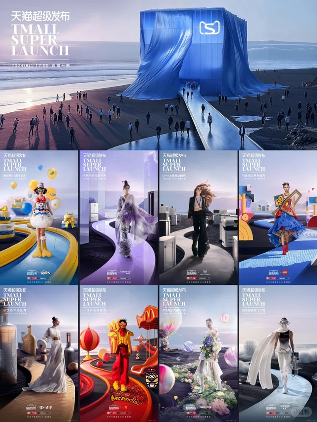
AIGC / Observation / Code Iris / Naming / Collectible
Iris / Naming / Collectible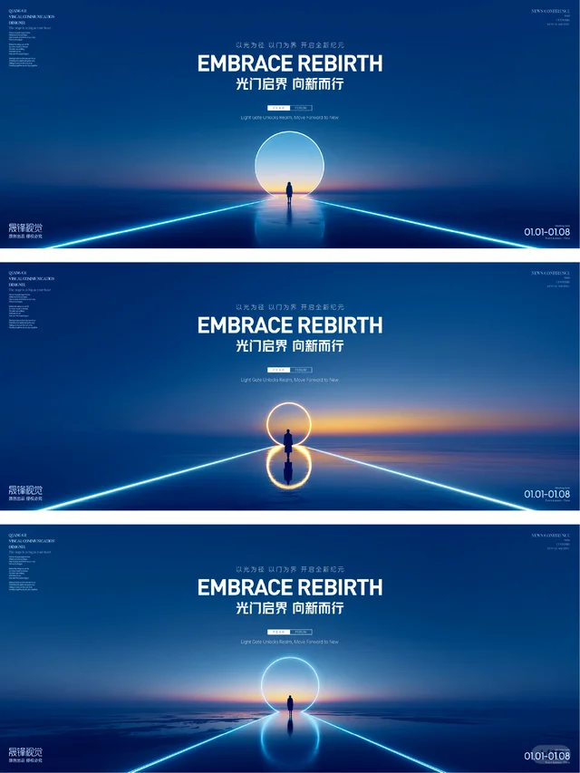
Eye / Nebula / Loop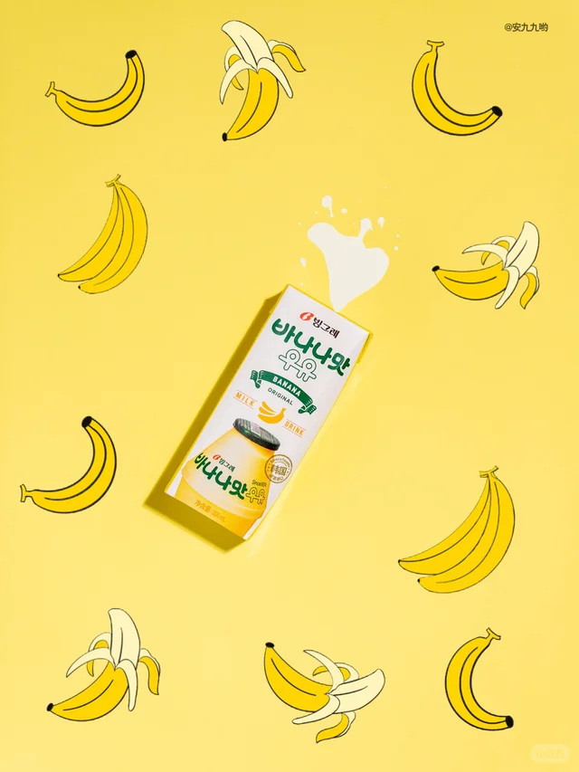
Stop Motion / Specimen / Texture Palette / Material / System
Palette / Material / System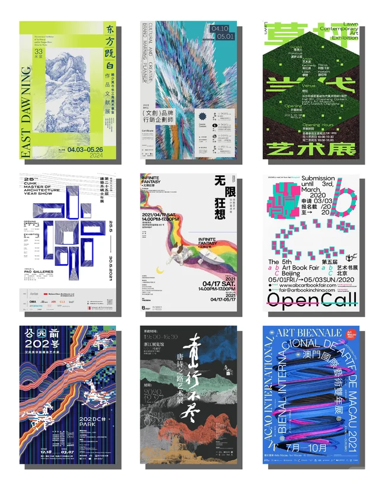
Exhibition / Wall Label / Art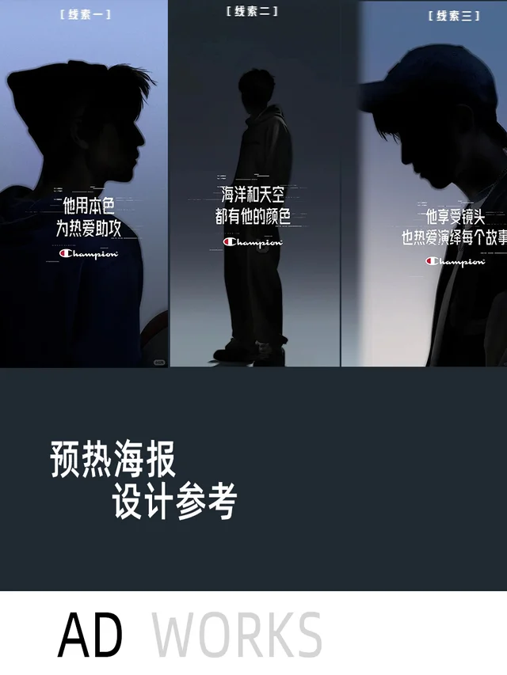
Case File / Countdown / Clue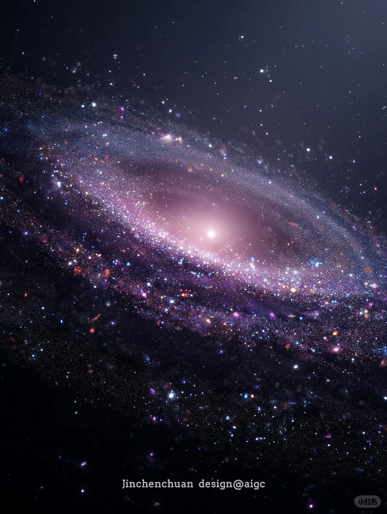
Dark Field / Home / Route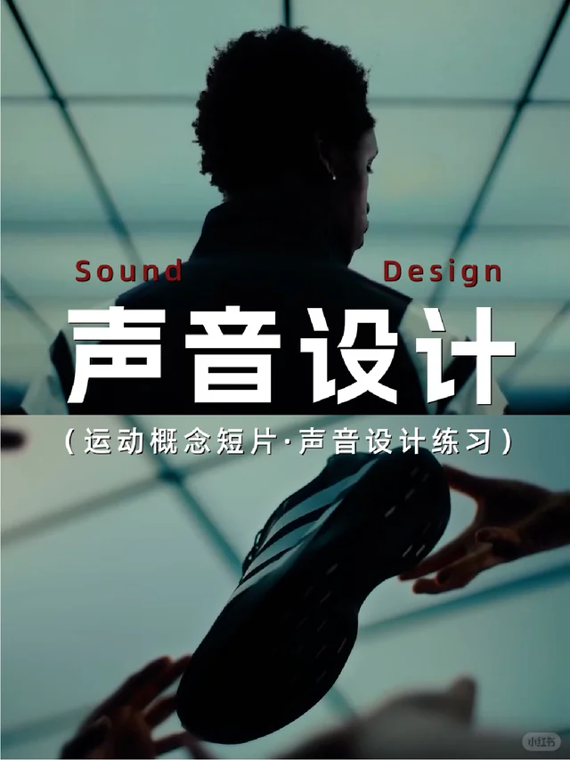
Sound / Projector / PreludePush 02
目标不是解释肖宇梁适合这个概念，而是让观众感到：黑场里的神秘、白场里的松弛、酒酒代表的陪伴，本来就能共同构成他的这一季影像。
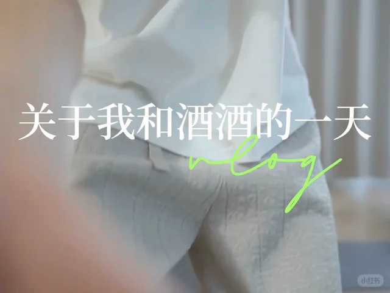
Jiujiu / Low Angle / Companion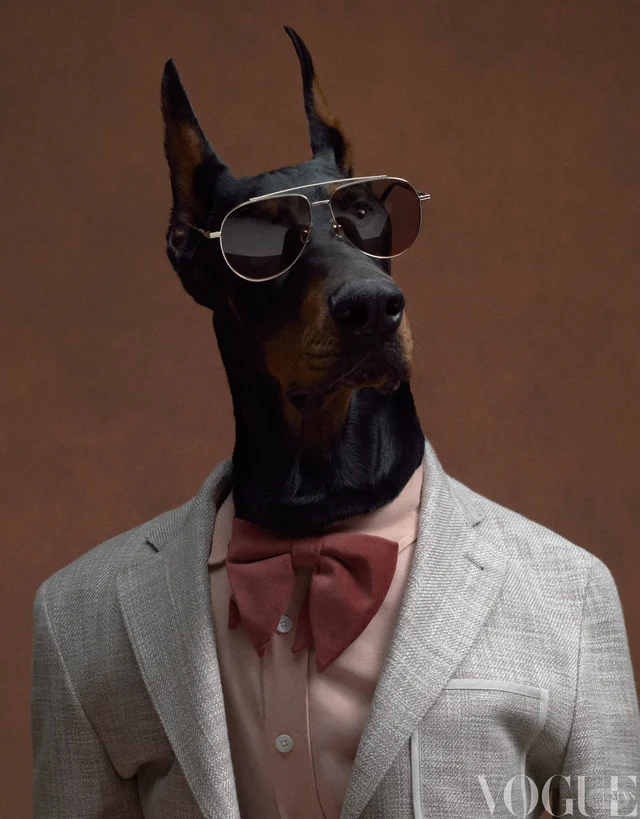
Editorial / One Person One Dog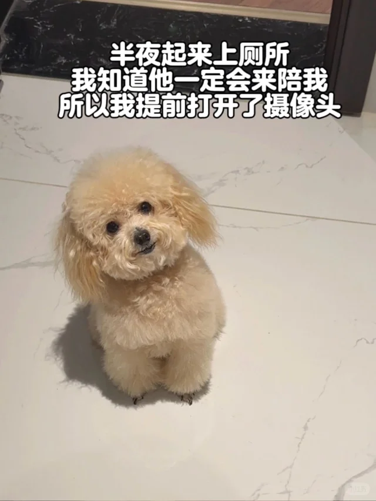
Home / Repair / Everyday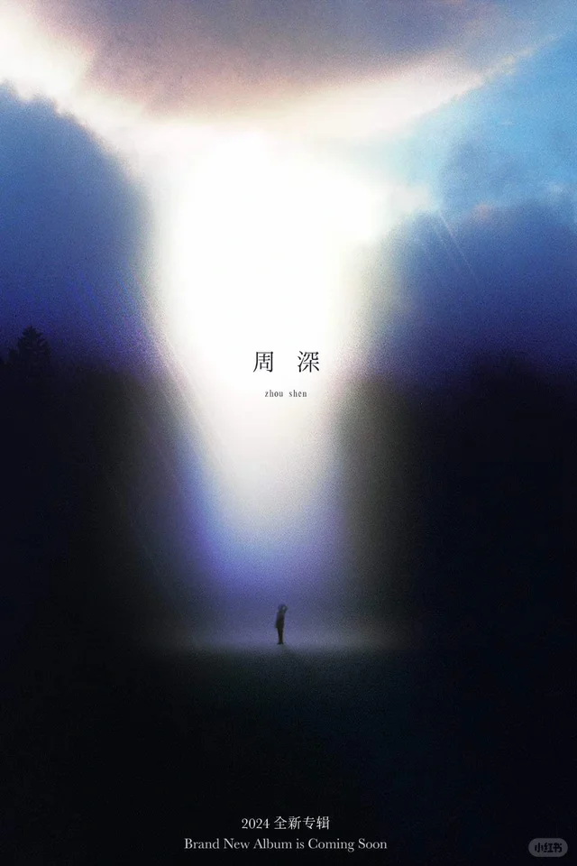
Night Voyager / Homecomer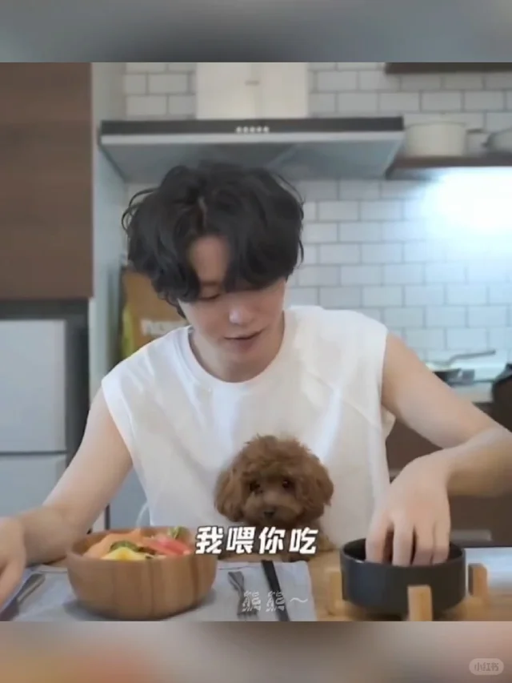
Letter / Paw Print / Voice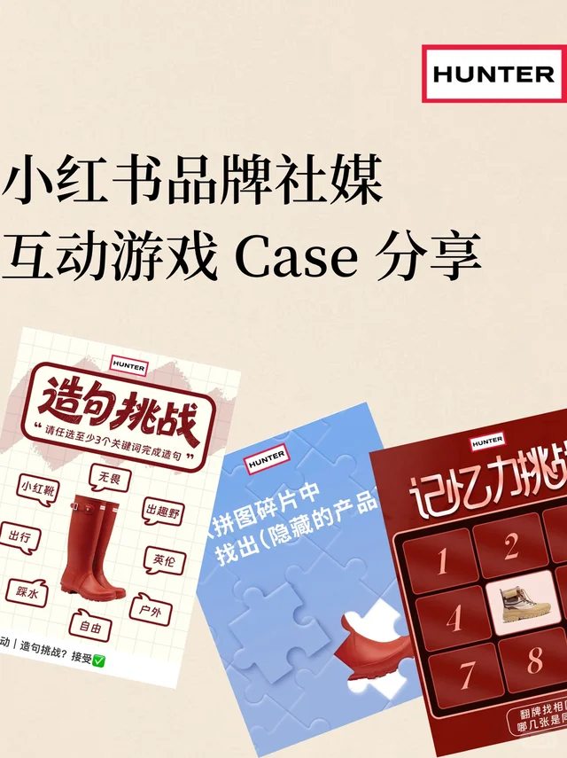
UGC / Template / Companion Star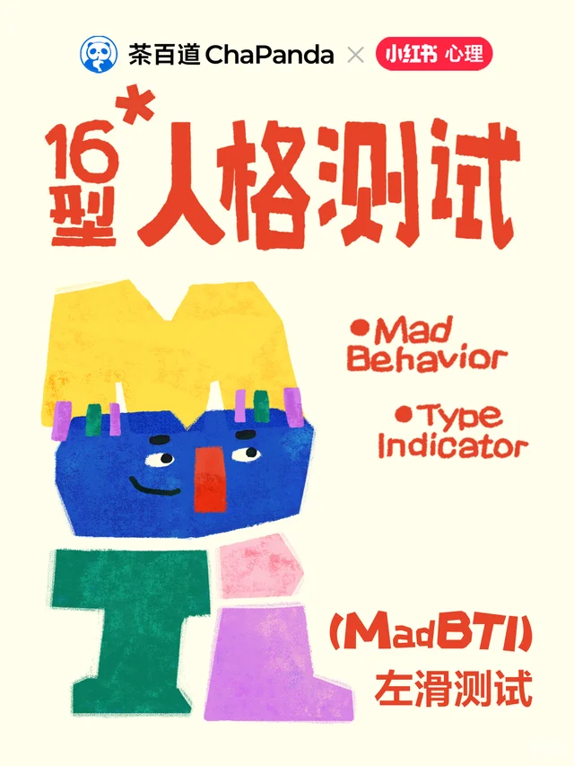
Interaction / Comment / PersonaReference Wall
以下缩略图为本次独立调研中使用的内容参考，覆盖 AIGC 主视觉、明星预热、艺术策展、鸢尾花色彩、声音设计、宠物陪伴与互动玩法。点击可打开对应小红书笔记。
AIGC 品牌主视觉、秀场感、收藏型教程逻辑。
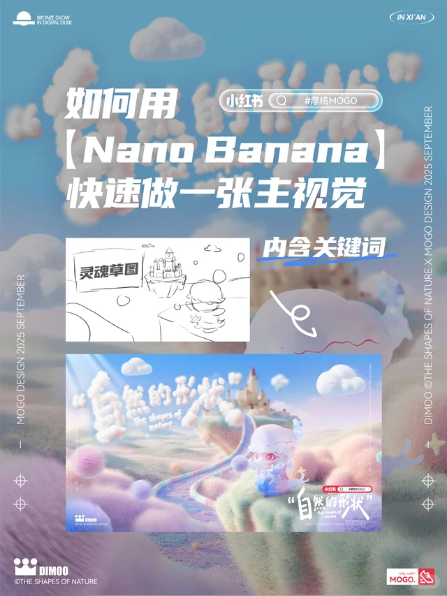
R02Nano banana 主视觉流程思路主视觉流程、AIGC 工作流、封面吸引力。
R05周深专辑概念预告明星概念预告、角色化表达、强情绪封面。
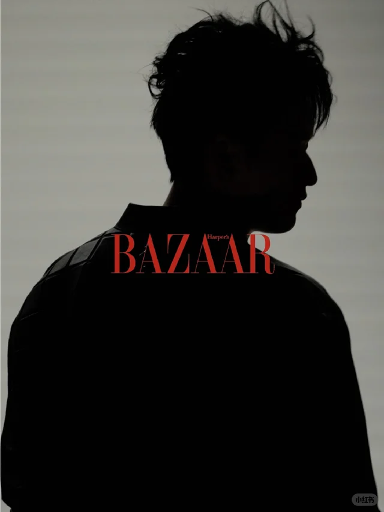
R06时尚芭莎人物概念视频人物新故事、编辑气质、明星概念短片节奏。
R07明星预热悬念海报线索类型编号感、局部线索、倒计时与猜测机制。
R10展览邀请函与艺术海报视觉策展美术馆语境、展签排版、邀请函式传播。
R11未来感蓝调 KV 光门概念视觉蓝调未来感、光门、品牌主视觉结构。
R12AI 鸢尾花插画海报鸢尾花视觉拆解、步骤型内容、收藏价值。
R13色彩美学｜鸢尾花花卉色谱、审美知识卡、蓝紫调性。
R14宇宙岛宇宙空间日常化，柔软边界与温柔表达。
R17定格动画牛奶香蕉物件运动、定格节奏、低成本高观看性。
R19高级感声音设计思路声音概念短片、广告听觉识别、制作质感。
R20广告的好声音声音设计作为传播记忆点的参考。
R21肖宇梁：酒酒陪吃饭肖宇梁与酒酒的既有平台认知和陪伴语气。
R22小狗陪伴幸福感宠物陪伴、情绪修复、日常视频高互动。
R23写陪伴不能只写陪伴陪伴关系的文案方法，适合转译酒酒叙事。
R24世界破破烂烂，小狗缝缝补补小狗陪伴的情感传播与治愈表达。
R25VOGUEMan 小狗时尚内容宠物进入时尚大片时的构图与语气参考。
R28品牌人格测试互动评论区参与、人格卡、互动内容结构。
R29小红书互动游戏玩法小预算互动传播、模板化参与路径。
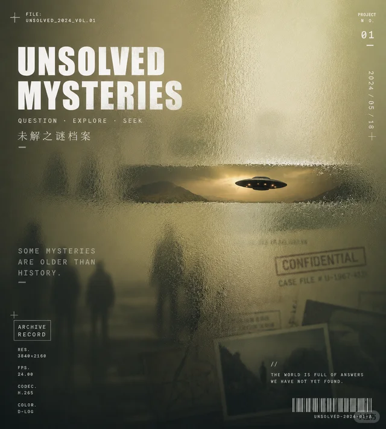
R30压花玻璃档案风提示词档案风、玻璃质感、AI 视觉关键词。
注：缩略图仅作内部提案参考；链接内容可能因平台登录态、作者权限或平台策略变化而变化。
Production Direction
第一条用 CASE FILE: NG7023 建立主题系统，第二条用酒酒的轨道建立情感锚点。一个负责概念高度，一个负责用户停留。